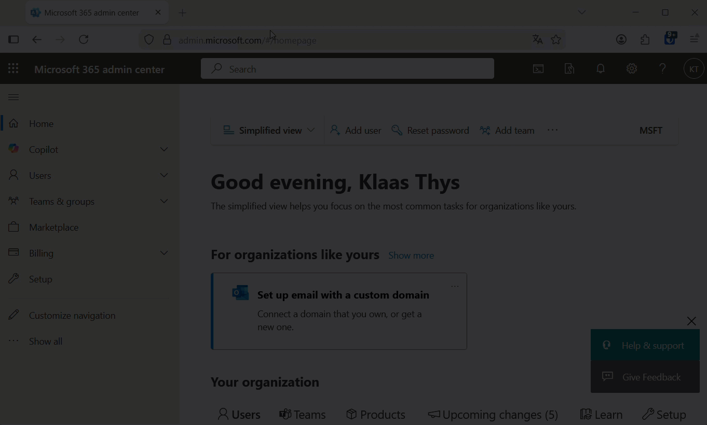
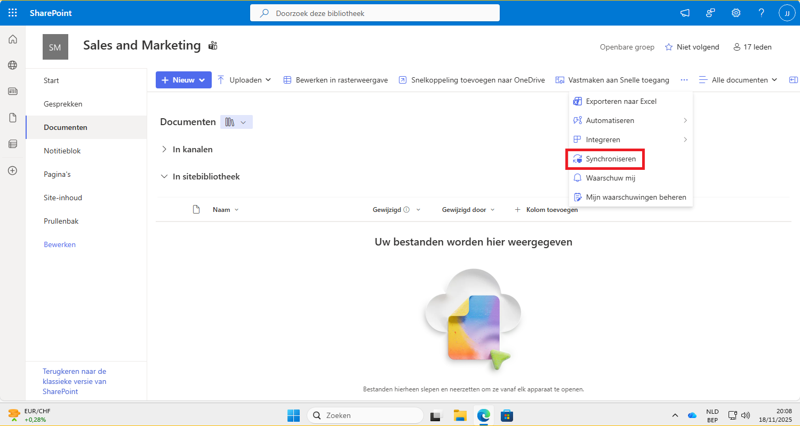
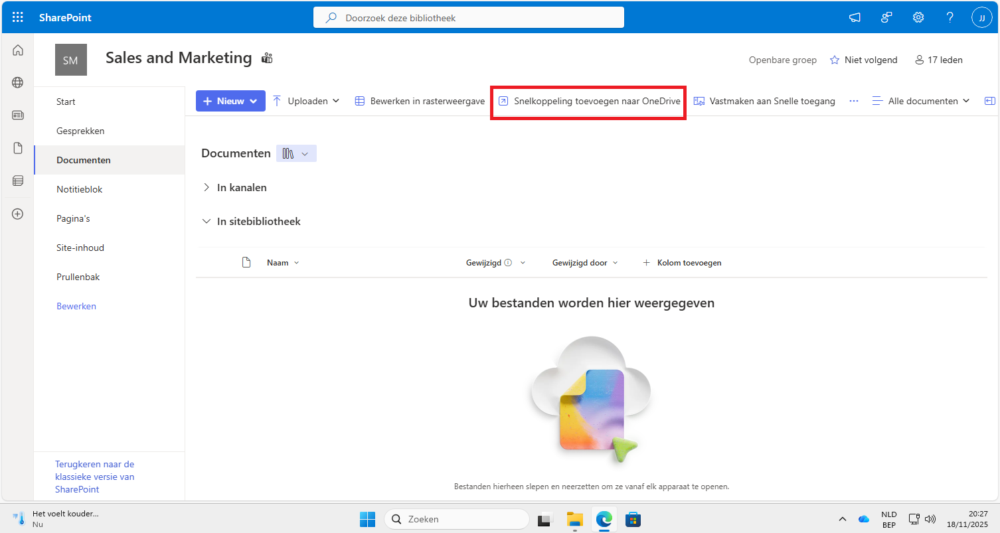

OneDrive¶
OneDrive is de persoonlijke cloudopslagdienst van Microsoft waarmee je je bestanden veilig kan opslaan, synchroniseren en vanaf elk toestel kan openen.
1. Toegang tot OneDrive¶
- Open een webbrowser en ga naar een Microsoft 365-site, zoals:
- https://m365.cloud.microsoft.com
- https://office.com
- https://portal.office.com
- Selecteer in het linkermenu Apps.
- Klik op de tegel OneDrive.

Je kan ook rechtstreeks naar je OneDrive gaan via de directe URL. Navigeer naar https://abcd-my.sharepoint.com en vervang abcd door je eigen onmicrosoft.com-domein.
Als je account bijvoorbeeld voornaam.achternaam@sz6m.onmicrosoft.com is, dan is je OneDrive-URL https://sz6m-my.sharepoint.com.
2. OneDrive-client¶
De OneDrive-client is een applicatie voor desktop/mobiele toestellen die bestanden automatisch synchroniseert tussen je toestel en OneDrive en ze up-to-date houdt op al je toestellen. Ze laat je ook toe om bestanden offline te openen, te bewerken en te delen, waarbij wijzigingen weer met OneDrive worden gesynchroniseerd zodra je online bent.
OneDrive-iconen¶
Wanneer je de OneDrive-client gebruikt om je OneDrive op je Windows-toestel te synchroniseren, staat naast elk bestand of elke map een icoon. Hieronder vind je een overzicht van deze iconen en hun betekenis.
| Icoon | Beschrijving |
|---|---|
| Het bestand of de map wordt enkel in de cloud opgeslagen. Dubbelklikken downloadt de inhoud naar je toestel. | |
| Het bestand of de map is zowel in de cloud als lokaal op je toestel beschikbaar. | |
| Je hebt de optie “Always keep on this device” geselecteerd. Het bestand of de map blijft zowel lokaal op je toestel als in de cloud opgeslagen. | |
| Er is een synchronisatiefout met het bestand of de map. Controleer je OneDrive-meldingen voor stappen om het probleem op te lossen. | |
| Het bestand of de map wordt gesynchroniseerd. Een nieuwe versie wordt geüpload of gedownload. |
3. SharePoint-integratie¶
De OneDrive-client is ontworpen om je OneDrive-bestanden en -mappen te synchroniseren en kan ook SharePoint document libraries integreren. Zo heb je rechtstreeks in File Explorer toegang tot SharePoint-bestanden via de OneDrive-client, in plaats van een webbrowser te moeten gebruiken.
Er zijn twee manieren om SharePoint document libraries aan je OneDrive-client toe te voegen.
3.1. Synchroniseren (Sync)¶
- Navigeer naar de SharePoint document library die je met OneDrive wil synchroniseren.
- Klik bovenaan in het lint op de knop “Sync”.
- De SharePoint document library wordt nu aan je OneDrive-client toegevoegd.

Ze is zichtbaar in een afzonderlijke sectie in File Explorer.

Eigenschappen - Aparte categorie: er wordt een aparte categorie aangemaakt in File Explorer, waardoor je persoonlijke OneDrive-bestanden duidelijk onderscheiden zijn van je SharePoint-bestanden. - Toestelspecifieke synchronisatie: de synchronisatie geldt enkel voor het toestel waarop je de synchronisatie hebt ingesteld. Andere toestellen synchroniseren deze SharePoint-library niet automatisch. - Een SharePoint-library verwijderen: om een SharePoint document library uit de synchronisatie te verwijderen, moet je eerst de synchronisatie van de library stoppen voordat je de map in File Explorer verwijdert. Doe je dat niet, dan worden alle bestanden in de SharePoint document library verwijderd. - Impact op de prestaties: het synchroniseren van een grote document library of meerdere SharePoint-libraries kan de synchronisatie merkbaar vertragen. Het is aan te raden om enkel de SharePoint-libraries te synchroniseren die je vaak gebruikt.
Stappen om de synchronisatie van een SharePoint document library correct te verwijderen: 1. Klik op het tandwielicoon in de OneDrive-client. 2. Selecteer Settings. 3. Klik op het tabblad Account op “Stop sync” naast de document library die je wil verwijderen. 4. Zodra de synchronisatie gestopt is, kan je de map veilig uit File Explorer verwijderen.

3.2. Snelkoppeling (Shortcut)¶
- Navigeer naar de SharePoint document library waarvoor je een snelkoppeling in je OneDrive wil toevoegen.
- Klik bovenaan in het lint op de knop “Add shortcut to OneDrive”.
- De snelkoppeling naar de SharePoint document library verschijnt nu in de hoofdmap (root) van je OneDrive.

Ze is zichtbaar in de root van je OneDrive-map in File Explorer.

Eigenschappen
- Er wordt een link naar de SharePoint document library toegevoegd aan de root van je OneDrive-map.
- Deze snelkoppeling is zichtbaar in OneDrive online en op alle toestellen waarop je OneDrive wordt gesynchroniseerd.
- Prestaties: een snelkoppeling toevoegen heeft een minimale impact op de synchronisatie en de systeemprestaties, omdat enkel een link wordt aangemaakt en niet alle bestanden lokaal worden gedownload.